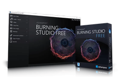
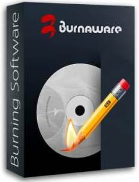
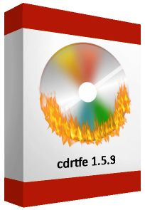
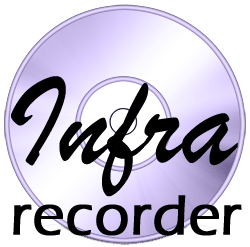

Безкоштовні програми для запису CD/DVD/Blu-ray дисків. Огляд 2026
Актуальність запису інформації на оптичні диски з кожним роком все зменшується, бо в сучасному світі з розвитком новітніх технологій з’явились інші можливості збереження інформації. Але для тих, хто ще продовжує користуватись CD/DVD/Blu-ray програвачами та дисководами, залишається необхідність запису різних даних на оптичні диски. В мережі існує досить багато різних програм для запису дисків, як платних, так і безплатних. Пропоную вашій увазі перелік із найбільш популярних безплатних програм для запису різних даних на оптичні диски станом на початок 2026 року.
Чому CD/DVD/Blu-ray диски все ще потрібні?
(навіщо це читати у 2026 році):
- Архівування даних на довготривалий термін (M-Disc, Blu-ray).
- Створення завантажувальних (bootable) дисків для ремонту ПК.
- Сумісність зі старим обладнанням (автомагнітоли, CD/DVD-плеєри).
Ashampoo Burning Studio Free
(безплатна альтернатива Nero Burning ROM)
Розробник / країна: Ashampoo GmbH & Co. KG, Німеччина.
Функції: запис даних, аудіо, відео; створення/запис ISO; копіювання дисків; базові інструменти для обкладинок/архівування; інтерфейс для новачків.
Остання версія / дата: лінійка Ashampoo Burning Studio активно оновлюється (нові релізи серії 26/27 у 2024–2025 рр.; Free-відгалуження доступне на сайті).
Сумісність Windows: підтримка сучасних Windows (Windows 10 / Windows 11) при використанні актуальної збірки.
Офіційний сайт / завантаження: https://www.ashampoo.com/
Докладніше про Ashampoo Burning Studio Free
(Інформація з офіційного сайту Ashampoo)
Ashampoo Burning Studio Free - це безплатне програмне забезпечення для швидкого запису CD та DVD-дисків.
Ashampoo Burning Studio FREE — це ваш швидкий та зручний спосіб вирішити ваші потреби в записі дисків: записуйте диски з даними, створюйте резервні копії, копіюйте або створюйте власні аудіо компакт-диски або записуйте існуючі фільми на Blu-ray. Це лише деякі з багатьох функцій Ashampoo Burning Studio FREE! Керування програмою просте та логічне як для початківців, так і для досвідчених користувачів.
Завантажте Ashampoo Burning Studio FREE безкоштовно та користуйтеся нею вічно!
Запис компакт-дисків став простим – ось як:
- Запустіть програму та виберіть потрібну функцію (наприклад, «Записати дані на диск»)
- Додайте файли за допомогою перетягування
- Вставте чистий компакт-диск, DVD або Blu-ray та натисніть «Записати» – готово!
Легко записуйте дані!
Безкоштовне програмне забезпечення для швидкого запису CD, DVD та Blu-ray дисків!
Звичайно, запис даних на CD, DVD або Blu-ray диски є однією з сильних сторін цієї програми. Існуючі диски, включаючи перезаписувані носії (RW), можна оновлювати або видаляти, якщо вони підтримуються. Отримайте безкоштовне рішення, яке робить все це, і з будь-яким обладнанням!
Безкоштовне програмне забезпечення для запису аудіо!
Копіюйте аудіодиски з визначенням доріжок та створюйте власні музичні компакт-диски в різних форматах!
Аудіофіли знайдуть Burning Studio FREE досить корисним для вилучення аудіо з компакт-дисків разом з автоматичним розпізнаванням дисків та доріжок. Вихідні формати включають MP3, WMA та WAV у всіх можливих рівнях якості.
Більше пісень на вашому диску
Насолоджуйтесь годинами музики з аудіодисками MP3 та WMA!
Окрім традиційних аудіо компакт-дисків, MP3 та WMA також підтримуються для кількох годин аудіо на одному диску. Вбудована нормалізація забезпечує однакові рівні гучності, а вбудований програвач забезпечує миттєвий аудіозв'язок для легкого вибору правильних треків.
Запис фільмів та копії дисків
Записуйте фільми у найвищій якості або створюйте копії з легкістю!
За допомогою Ashampoo Burning Studio FREE ви також можете записувати відео у форматі HD та Full HD, якщо потрібні файли доступні у вигляді підготовленої папки. Створення відео-CD (VCD) або супер-відео-CD (SVCD) також можливе миттєво. Звичайно, програма також створює копії дисків лише за кілька кліків.
Резервні копії, захищені паролем
Максимальна безпека ваших записаних файлів!
Burning Studio також має потужну функцію резервного копіювання. Запишіть або створіть резервну копію будь-якого файлу на внутрішній або зовнішній носій інформації, включаючи USB-флеш-накопичувачі. Завдяки вдосконаленій технології стиснення резервні копії займають дуже мало місця та можуть бути захищені паролем для додаткової безпеки. А резервні копії, занадто великі для одного диска, будуть просто розподілені по кількох томах. Все, що вам потрібно для відновлення файлів, це Burning Studio FREE та диски з даними.
Безкоштовний записувач ISO-файлів
Працюйте з образами дисків як професіонал!
Працювання з образами ISO-файлів є звичним явищем, особливо для професійних користувачів. Ashampoo Burning Studio FREE спрощує створення або запис образів дисків. Окрім власного формату ASHDISC від Ashampoo, програма також підтримує ISO та CUE/BIN. Перетворіть ваші CD, DVD або Blu-ray диски на образи для легшої роботи.
Безкоштовний додаток для запису дисків високої якості
Понад 20 років досвіду, щоб забезпечити вам найкращі результати запису!
В Ashampoo ми не вважаємо безкоштовне програмне забезпечення продуктами другого сорту. Ось чому ми піддаємо наші безкоштовні програми такому ж ретельному тестуванню, як і наші платні продукти. Саме тому Ashampoo Burning Studio FREE завжди отримуватиме своєчасні оновлення, щоб бути в курсі останніх розробок Windows та/або апаратного забезпечення. Хочете знати, як записати диск? Легко! Скористайтеся перевагами понад двох десятиліть досвіду розробки та записуйте свої файли, фотографії, фільми та музику на диск за допомогою Ashampoo Burning Studio FREE!
Завжди актуальне програмне забезпечення для запису
Неважливо, яку Windows, тип диска чи дисковод ви використовуєте – просто зробіть це!
Звичайно, Ashampoo Burning Studio FREE повністю сумісний з Windows 11 (а також 7, 8, 10) та постійно оновлюється. Незалежно від того, яку операційну систему, дисковод чи записувальний пристрій ви використовуєте, це надійне програмне забезпечення для запису забезпечує чудові результати. Щоб досягти цього, ми протестували тисячі компакт-дисків, DVD-дисків та Blu-ray дисків в Ashampoo, тому ви ніколи не будете розчаровані!
Ashampoo Burning Studio FREE підтримує такі типи та формати носіїв: CD, DVD та Blu-ray (CD-R, CD-RW, DVD±R, DVD±RW, BD-R, BD-RE)
- Аудіоформати: MP3, WMA, WAV, OGG, FLAC
- Образи дисків: ISO, CUE/BIN, ASHDISC
- Відеоформати: Запис папок Video_TS для DVD-дисків
Ashampoo Burning Studio FREE сумісна з Windows 11, 10, 8 та 7 (32- та 64-розрядні).
Примітка. Платна версія Ashampoo Burning Studio 27 має додаткові мультимедійні функції та можливості.
BurnAware Free
Розробник / країна: BurnAware Technologies (компанія з міжнародною присутністю; головнй офіс знаходиться в Іспанії).
Функції: запис даних, аудіо, відео, Blu-ray; створення/запис ISO; мультиверсії (Free / Premium / Pro); інструменти для копіювання і відновлення.
Остання версія / дата: v18.9 (03.09.2025) — оновлення з виправленнями для Windows 11.
Сумісність Windows: Windows 10 та Windows 11 (активно підтримується).
Офіційний сайт / завантаження: https://www.burnaware.com/.
Докладніше про BurnAware Free
(Інформація з офіційного сайту BurnAware)
BurnAware - це:
- Найкраще безплатне програмне забезпечення для запису
- Суперінтуїтивно зрозумілий інтерфейс користувача
- Підтримка BDXL та M-Disc
Програмне забезпечення для запису CD, DVD, Blu-ray з підтримкою M-Disc
BurnAware — це безплатне програмне забезпечення для запису, яке дозволяє створювати та записувати CD, DVD та Blu-ray диски всіх типів, включаючи M-Disc та BDXL. Домашні користувачі можуть легко створювати завантажувальні диски, багатосесійні диски, високоякісні аудіо CD та відео DVD, а також створювати та записувати ISO-образи. Досвідчені користувачі оцінять розширені функції BurnAware, такі як керування параметрами завантаження, редагування аудіо CD-Text, відновлення даних, розширення диска та копіювання диска.
- Усі медіаносії: Підтримка широкого спектра оптичних дисків для зберігання даних, включаючи CD, DVD, Blu-ray диски, двошарові диски, M-диски та DVD та Blu-ray надвеликої місткості.
- Різні завдання: BurnAware охоплює всі щоденні завдання запису, такі як запис дисків, резервне копіювання, перевірка, створення образів, копіювання та стирання дисків, відновлення даних, вилучення аудіодоріжок.
- Три видання: BurnAware пропонує повний спектр програмного забезпечення для запису, де кожен знайде щось для себе, це може бути повнофункціональне безплатне програмне забезпечення для запису або комерційне програмне забезпечення з додатковими інструментами.
AnyBurn
Розробник / країна: Power Software Ltd. (Китай).
Функції: запис/створення образів ISO та інших форматів, аудіо CD, копіювання дисків, риппінг аудіо, створення завантажувальних USB, конвертація образів.
Остання версія / дата: v6.6 — 02.10.2025.
Сумісність Windows: Windows 10 та Windows 11 (активно підтримується).
Офіційний сайт / завантаження: https://www.anyburn.com/
Докладніше про AnyBurn
(Інформація з офіційного сайту AnyBurn)
Основні можливості:
- Записування компакт-дисків з даними, DVD та Blu-ray дисків
- Створення аудіо-CD та MP3-CD з різних музичних файлів
- Копіювання аудіо-CD у музичні файли
- Конвертація музичних файлів
- Створення завантажувального USB-накопичувача з ISO-файлів
- Встановлення Windows на USB-накопичувач
- Маніпулювання файлами образів дисків для оптичних дисків та USB-накопичувачів
Комплексні рішення для запису дисків, створення образів та завантажувальних USB-накопичувачів
AnyBurn — це легке, але професійне програмне забезпечення для запису дисків, створення образів та завантажувальних USB-накопичувачів. Воно не лише надає комплексне рішення для запису дисків та створення образів, але й виконує багато завдань на USB-накопичувачі, таких як створення завантажувального USB-накопичувача, встановлення Windows на USB-накопичувач та маніпулювання файлами образів USB-накопичувачів.
- Підтримує всі оптичні носії: AnyBurn підтримує всі оптичні носії, такі як CD, DVD та Blu-ray диски. Він може створювати диски з даними, аудіо CD та MP3 CD. AnyBurn надає комплексне рішення для запису та створення образів дисків.
- Безкоштовне програмне забезпечення для керування файлами образів дисків: AnyBurn підтримує ISO та інші популярні файли образів дисків. Він забезпечує зручний спосіб створення, вилучення та конвертації файлів образів дисків.
- Найкраще програмне забезпечення для завантажувального USB-флеш-накопичувача: AnyBurn може виконувати багато завдань на USB-накопичувачі, таких як створення завантажувального USB-накопичувача, встановлення Windows на USB-накопичувач, створення файлу образу диска з USB-накопичувача та запис файлу образу на USB-накопичувач.
True Burner
Розробник / країна: Glorylogic (комерційний/невеликий розробник). Країна не вказана.
Функції: запис даних, MP3/CD, DVD-Video, створення ISO, мультисесії, підтримка M-Disc; проста й компактна утиліта.
Остання версія / дата: v10.6 — 04.11.2025
Сумісність Windows: Windows 10 та Windows 11 (працює при використанні останніх збірок).
Офіційний сайт / завантаження: сторінка розробника / Glorylogic: https://www.glorylogic.com/download.html; зеркальні сторінки для завантаження.
Докладніше про True Burner
(Інформація з офіційного сайту Glorylogic)
True Burner — це компактна, зручна та безплатна програма для запису, яка дозволяє створювати та записувати стандартні, багатосесійні та завантажувальні компакт-диски, DVD-диски та Blu-ray диски, використовуючи різні файлові системи та технологію M-Disc, включаючи ISO 9660 та UDF. За допомогою True Burner ви можете легко створювати та записувати диски з даними, MP3-диски, DVD-відеодиски та ISO-образи.
Запис даних на CD/DVD/Blu-ray диски
- Створення багатосесійних та завантажувальних дисків
- Запис MP3-дисків та DVD-відео дисків
- Запис ISO-образів та перевірка записаних файлів
- Стирання перезаписуваних та стираних дисків
- Підтримка Blu-ray та DVD дисків M-Disc та XL
- Підтримка Windows 7, 8, 10, 11 (32 та 64 розрядні версії)
Можливості True Burner
- Записувати: True Burner дозволяє створювати та записувати завантажувальні, багатосесійні та мультимедійні CD, DVD або Blu-ray диски, а також ISO-образи.
- Перевіряти: За допомогою True Burner ви можете перевірити записані файли та папки після запису, щоб переконатися, що дані були успішно записані.
- Стирати: За допомогою True Burner ви можете стерти будь-які перезаписувані носії, такі як CD-RW, DVD-RW, DVD+RW, BD-RE.
AstroBurn (Lite / Pro)
Розробник / країна: бренд Astroburn (продуктова сторінка вказує на незалежного розробника/бренд). Продукт пов’язаний з проєктом DAEMON Tools (що підказує походження від команди, близької до Disc Soft. Країна розробника не вказана.
Функції: Lite — запис ISO і даних; Pro — додатково запис аудіо, створення образів, копіювання дисків, захист та інше.
Остання версія / дата: Pro та Lite мають окремі релізи; приклад — Astroburn Pro 4.0.0.234 (попередній реліз 2018 року, Lite-збірки оновлювались 09.11.2024 року).
Сумісність Windows: заявлена підтримка Windows 10 / Windows 11 при використанні сучасної редакції.
Офіційний сайт / завантаження: https://www.astroburn.com/
Докладніше про AstroBurn Lite
(Інформація з офіційного сайту AstroBurn)
Основні можливості AstroBurn Lite
Записуйте ISO-образи на диски:
- Перетворюйте власні образи на справжні диски
- Створюйте завантажувальний диск для відновлення ОС
- Збережіть місце на жорсткому диску
Створюйте диски з даними
- Записуйте будь-які файли на оптичні диски
- Створюйте власні проєкти
- Налаштовуйте процес запису та перевіряйте результати
Налаштуйте свою програму
- Отримайте доступ до найпотрібніших інструментів з одного вікна
- Персоналізуйте інтерфейс за допомогою крутих скінів
- Виберіть свою мову, щоб все було зрозуміло
CDRtfe
Розробник / країна: відкритий проєкт (open source), frontend для cdrtools та суміжних утиліт. У проєкту немає офіційно заявленої країни розробника, оскільки він розподілений як добровільний open-source проєкт під GNU GPL. Стандартні джерела не вказують конкретну країну базування авторів, але сайт містить інформацію німецькою та англійською мовами.
Функції: запис даних, Audio CD, (S)VCD, DVD-Video; створення/запис ISO; одночасний запис на кілька приводів; portable-версія.
Остання версія / дата: 1.5.9 — 25.10.2021 (остання офіційна збірка проєкту на SourceForge).
Сумісність Windows: працює під Windows 10; сумісність із Windows 11 залежить від використовуваних компонентів, але часто працює як portable GUI над консольними утилітами.
Офіційний сайт / завантаження: https://cdrtfe.sourceforge.io/ (сторінка проєкту на SourceForge).
Докладніше про CDRtfe
(Інформація з офіційного сайту CDRtfe)
CDRtfe — це програма з відкритим кодом для запису CD/DVD/BD для Microsoft Windows. Ви можете записувати диски з даними, аудіо CD, XCD, (S)VCD та DVD-Video диски. Вона підтримує створення та запис ISO-образів та завантажувальних дисків. Образи дисків та аудіо CD можна записувати одночасно на кілька записуючих пристроїв.
CDRtfe — це інтерфейс для Win32 для cdrtools (cdrecord, mkisofs, readcd, cdda2wav), Mode2CDMaker, VCDImager та інших відомих інструментів.
CDRtfe має багатомовний інтерфейс і також доступна у портативній версії.
Для Windows XP (з обмеженнями), Vista, 7, 8, 8.1, 10, 11.
Vovsoft Burn Studio
Розробник / країна: Vovsoft (незалежний розробник; Turkiye / Туреччина у публічних джерелах).
Функції: мінімалістичний запис даних і Blu-ray/CD/DVD; перевірка після запису; форматування перезаписуваних дисків; простий інтерфейс.
Остання версія / дата: v1.7 — 26.02.2020 (остання офіційна реліз-дата).
Сумісність Windows: продукт заявляє сумісність з Windows 7/8/10/11, але оновлення давніше — практична сумісність тестується користувачами.
Офіційний сайт / завантаження: https://vovsoft.com/software/burn-studio/
Докладніше про Vovsoft Burn Studio
(Інформація з офіційного сайту Vovsoft Burn Studio)
Vovsoft Burn Studio — це справді легка утиліта для запису CD, DVD та Blu-ray дисків, розміром лише 700 КБ, яка не містить жодних зайвих функцій чи надмірно складної конфігурації, характерних для інших програм для запису — вона проста та зручна у використанні. Вона дозволяє легко додавати файли та папки та записувати їх простим натисканням кнопки «Записати». Вона також включає підтримку перевірки диска після завершення процесу запису. Ви також маєте можливість форматувати перезаписувані диски для повторного запису, а також створювати власні мітки для дисків.
Для цієї програми потрібен .NET Framework 3.5.
Категорія: Аудіо та мультимедіа — Програми для запису компакт-дисків.
Підтримка: Windows 11, Windows 10, Windows 8/8.1, Windows 7, Windows Vista, Windows XP (32-розрядна та 64-розрядна).
Мова: Англійська.
Ліцензія: Безплатна — без клопоту, без реклами, повністю функціональна.
CDBurnerXP
Розробник / країна: Canneverbe Limited / проект CDBurnerXP (проект з європейським походженням). Конкретної країни розробника на сайті не вказано.
Функції: запис даних, аудіо CD, створення/запис ISO, завантажувальні диски, підтримка Blu-ray, мультисесії.
Остання версія / дата: v4.5.8.7128 (остання публічна збірка — доступна на сайті). Дата: 19.11.2019.
Сумісність Windows: сумісний із Windows 10, за повідомленнями користувачів — працює і на Windows 11 (часті установки, цифрово підписаний інсталятор).
Офіційний сайт / завантаження: https://cdburnerxp.se/
Докладніше про CDBurnerXP
(Інформація з офіційного сайту CDBurnerXP)
CDBurnerXP — це безплатна програма для запису компакт-дисків та DVD-дисків, включаючи Blu-Ray та HD-DVD. Вона також містить функцію запису та створення ISO-образів, а також багатомовний інтерфейс. Кожен, навіть компанії, може користуватися нею безплатно.
Основні характеристики:
- Запис усіх видів дисків
- Аудіо-CD з проміжками між доріжками або без них
- Запис та створення ISO-файлів
- Перевірка даних після запису
- Створення завантажувальних дисків
- Багатомовний інтерфейс
- Конвертер bin/nrg → ISO, простий друк обкладинки та багато іншого!
- Операційні системи: Windows 2000/XP/2003 Server/Vista/2008 Server/Win7/Win8/2012 Server/Win10 (x86 / x64)
ImgBurn
Розробник / країна: LIGHTNING UK! (незалежний розробник) — англомовний проєкт. Країна офіційно не вказана.
Функції: професійна робота з образами (читання/створення ISO, широкий набір форматів образів), запис образів на диски, перевірка запису, тестування приводу.
Остання версія / дата: 2.5.8.0 — 16 червня 2013 (останнє офіційне оновлення).
Сумісність Windows: Windows 10 — як правило працює; Windows 11 — можливі питання сумісності через відсутність оновлень; часто працює у режимі сумісності.
Офіційний сайт / завантаження: https://www.imgburn.com/
Докладніше про ImgBurn
(Інформація з офіційного сайту ImgBurn)
ImgBurn — це легка програма для запису CD / DVD / HD DVD / Blu-ray, яка повинна бути у кожного!
Вона має кілька «режимів», кожен з яких виконує різні завдання:
- Читання — читання диска у файл образу
- Створення — створення файлу образу з файлів на вашому комп’ютері або в мережі, або ви можете записати файли безпосередньо на диск
- Запис — запис файлу образу на диск
- Перевірка — перевірка 100% читабельності диска. За бажанням, ви також можете порівняти ImgBurn із заданим файлом образу, щоб переконатися в правильності фактичних даних
- Виявлення — перевірте свій диск / носій! Використовуючи разом з DVDInfoPro, ви можете перевірити якість запису, який створює ваш дисковод
ImgBurn підтримує широкий спектр форматів файлів зображень, включаючи BIN, CCD, CDI, CUE, DI, DVD, GI, IMG, ISO, MDS, NRG та PDI.
Він може записувати аудіо компакт-диски з будь-якого типу файлів, що підтримується DirectShow / ACM, включаючи AAC, APE, FLAC, M4A, MP3, MP4, MPC, OGG, PCM, WAV, WMA та WV.
Ви можете легко використовувати його для створення DVD-відеодисків (з папки VIDEO_TS), HD DVD-відеодисків (з папки HVDVD_TS) та Blu-ray-відеодисків (з папки BDAV / BDMV).
Він підтримує імена папок/файлів у форматі Unicode, тому у вас не повинно виникнути проблем, якщо ви використовуєте міжнародний набір символів.
ImgBurn підтримує всі ОС Microsoft Windows: Windows 95, Windows 98, Windows Me, Windows NT4, Windows 2000, Windows XP, Windows 2003, Windows Vista, Windows 2008, Windows 7, Windows 8 та Windows 10 (включаючи всі 64-розрядні версії). Якщо ви використовуєте Wine, він також має працювати на Linux та інших Unix-системах на базі x86.
Це дуже гнучка програма з кількома розширеними функціями, яких часто бракує в інших інструментах, особливо коли йдеться про запис DVD-відеодисків. Вона підтримує всі найновіші диски без необхідності оновлень (включаючи налаштування booktype / bitsetting / розширені налаштування на багатьох основних дисках, таких як BenQ, LiteOn, LG, NEC, Optiarc, Pioneer, Plextor, Samsung, Sony).
Існує система черги зображень для запису кількох образів (яку можна автоматично розподілити між кількома дисками, якщо у вас їх більше одного) та простий у використанні екран вибору розриву шарів для завдань запису двошарових DVD-відео. Функція автоматичного визначення швидкості запису дозволяє зберігати ваші улюблені налаштування швидкості запису для кожного «ідентифікатора носія», аж до рівня кожного диска окремо. Дані, отримані під час запису (швидкість запису, рівні буфера тощо), можна відображати/аналізувати за допомогою DVDInfoPro.
Хоча ImgBurn розроблено для ідеальної роботи одразу після розпакування, досвідчені користувачі оцінять його можливості налаштування.
О, і не забуваймо про найкраще... це 100% БЕЗКОШТОВНО 😉
Будь ласка, не використовуйте це програмне забезпечення для створення незаконних копій дисків, захищених авторським правом.
InfraRecorder
Розробник / країна: open source-проєкт (автор Christian Kindahl та інші). У відкритих джерелах не зазначено офіційної країни автора.
Функції: запис даних і аудіо CD, створення/запис ISO, копіювання дисків, мультисесії, інтеграція з Explorer.
Остання версія / дата: 0.53 — 1 вересня 2012 (останній офіційний реліз).
Сумісність Windows: офіційно орієнтований на старіші Windows; на Windows 10/11 сумісність не гарантується та залежить від системи; програма застаріла.
Офіційний сайт / завантаження: https://infrarecorder.org/
Докладніше про InfraRecorder
(Інформація з офіційного сайту InfraRecorder)
InfraRecorder — це безплатне рішення для запису CD/DVD для Microsoft Windows. Воно пропонує широкий спектр потужних функцій завдяки простому у використанні інтерфейсу програми та інтеграції з Провідником Windows.
InfraRecorder випущено під ліцензією GPL версії 3.
Основні функції:
- Створення власних проєктів даних, аудіо та змішаного режиму, а також їх запис на фізичні диски, а також образи дисків.
- Підтримка запису на двошарові DVD-диски.
- Стирання (чистка) перезаписуваних дисків чотирма різними методами.
- Запис образів дисків (ISO та BIN/CUE).
- Фіксація дисків (запис інформації про вихідні дані, щоб запобігти додаванню подальших даних на диск).
- Сканування шини SCSI/IDE на наявність пристроїв та збір інформації про їхні можливості.
- Створення копій дисків на льоту та за допомогою тимчасового образу диска.
- Імпорт даних сеансу з багатосесійних дисків та додавання до них нових сеансів.
- Відображення інформації про диск.
- Збереження аудіодоріжок та доріжок даних у файли (.wav, .wma, .ogg, .mp3 та .iso).
DeepBurner Free
Розробник / країна: Astonsoft Ltd. (приватний розробник). Країна не вказана.
Функції: запис даних і аудіо CD, створення і запис ISO, підтримка завантажувальних дисків; Free та Pro редакції.
Остання версія / дата: 1.9.0.228 (довготривала історія; релізи датуються переважно кінцем 2000-х — 2008–2010; прояви активності відсутні/рідкі).
Сумісність Windows: працювала на старіших версіях Windows; на Windows 10/11 — можливі обмеження; сумісність залежить від конкретної збірки та драйверів приводу.
Офіційний сайт / завантаження: https://www.deepburner.com/
Докладніше про DeepBurner Free
(Інформація з офіційного сайту DeepBurner)
Функції DeepBurner Free
DeepBurner має широкий список практичних та надзвичайно цінних функцій, які повністю задовольнять ваші потреби в записі. Вони починаються від компіляції ваших компакт-дисків та DVD-дисків у різних форматах і закінчуються створенням захопливих фотоальбомів та надійних резервних копій.
- Ви можете легко створювати та записувати звичайні CD/DVD-диски з даними
- Включена функція запису аудіоCD
- Швидке створення та запис ISO-образів
- Підтримка записуючих пристроїв CD/DVD IDE/EIDE, USB, SCSI та FireWire
- Функція перезапису
- Технологія захисту від вичерпання буфера "Burn-Proof"
- Підтримка методів запису DAO, SAO та TAO
- Підтримка CD-R / CD-RW / DVD-R / DVD+R / DVD-RW / DVD+RW / DVD-RAM
- Створення багатосесійних CD
- Підтримка завантажувальних CD/DVD
- Динамічно регульований розмір буфера диска
- Високопродуктивне кешування файлів/дискoв
- Підтримка файлових систем з довгими іменами файлів (Joliet)
- Створення CD/DVD-дисків з даними, сумісних з ISO (100% DOS/Windows)
- Підтримка кількох одночасних записуючих пристроїв
- Прості у використанні майстри допоможуть вам створити будь-який тип проєкту запису
- Майстер автозапуску дозволяє легко створювати ефективні автозапуски для ваших компакт-дисків
- Ви навіть можете легко створити власну обкладинку, буклет або вкладиш
- Звичайно ж, багатомовний інтерфейс
Small CD-Writer
Розробник / країна: AV(T) Lab (невеликий/незалежний проєкт). Офіційна країна не вказана.
Функції: простий портативний запис даних та ISO, мультисесії, створення завантажувальних дисків; дуже легка програма без установки.
Остання версія / дата: релізи 2006–2011; останні доступні збірки датуються серією 1.x (останнє відоме оновлення — близько 2006–2011).
Сумісність Windows: не гарантована підтримка сучасними ОС; застаріла, не рекомендована для Windows 10/11. Але працює на старіших версіях Windows XP, Win7.
Офіційний сайт / завантаження: Доступні лише mirror-сторінки для завантаження програми, зокрема https://www.softportal.com/get-3152-small-cd-writer.html; офіційний активний сайт сьогодні відсутній/недоступний.
Докладніше про Small CD-Writer
(Інформація з mirror-сторінки Small CD-Writer)
Small CD-Writer – програма для запису CD та DVD дисків. На відміну від більшості аналогічних програм, має маленький розмір, працює без встановлення, не потребує місця для кешування файлів. Програма дозволяє створювати багатосесійні та завантажувальні диски, записувати ISO-образи компакт-дисків, переглядати всі сесії на диску та вилучати з них файли, зберігати проєкти у вигляді ISO-образів.
Автоматичне визначення приводу та швидкості запису, а також максимально спрощений інтерфейс дозволяє працювати з програмою користувачам будь-якого рівня підготовки.
Для запису файлів на CD достатньо в провіднику вибрати пункт меню "Надіслати на Small CD-Writer" і у вікні натиснути кнопку "Записати".
Висновки та практичні поради
Короткий підсумок сумісності (практичний):
- Найкраща сумісність для Windows 10/11: BurnAware Free, AnyBurn, Ashampoo Burning Studio (актуальні релізи), CDBurnerXP, AstroBurn (сучасні збірки), True Burner — ці програми регулярно оновлюються або підтверджено працюють на нових ОС.
- Працюють, але застарілі або потребують режиму сумісності: ImgBurn — потужний для образів, але останнє оновлення 2013.
- Застарілі / не рекомендовані: InfraRecorder, DeepBurner Free, Small CD-Writer — старі релізи, низька ймовірність коректної роботи на Windows 11.
Рекомендації за сценаріями:
- Якщо основне завдання — робота з ISO і образами (професійний контроль) — найкраще: ImgBurn (за умови тесту на вашій системі) або AnyBurn (сучасна підтримка образів).
- Якщо потрібен універсальний, простий у використанні інструмент для запису даних/аудіо/відео — BurnAware Free, CDBurnerXP, Ashampoo Burning Studio Free.
- Якщо потрібна портативність і відкритий код — CDRtfe (GUI над перевіреними консольними інструментами).
Практичні поради при виборі та використанні програм:
- Завжди завантажуйте з офіційного сайту або перевірених репозиторіїв; уникайте сумнівних mirror-пакетів.
- Для старих програм (ImgBurn, InfraRecorder, DeepBurner) — тестуйте запис на непотрібному диску, використовуйте режим сумісності Windows, запускайте від імені адміністратора.
- Якщо потрібно довготривале збереження даних — обирайте диски M-Disc (підтримка залежить від програми/драйвера) і робіть контрольну перевірку після запису.
- Для підвищеної надійності на Windows 11 віддавайте перевагу програмам з релізами 2023–2025 років (BurnAware, AnyBurn, Ashampoo).